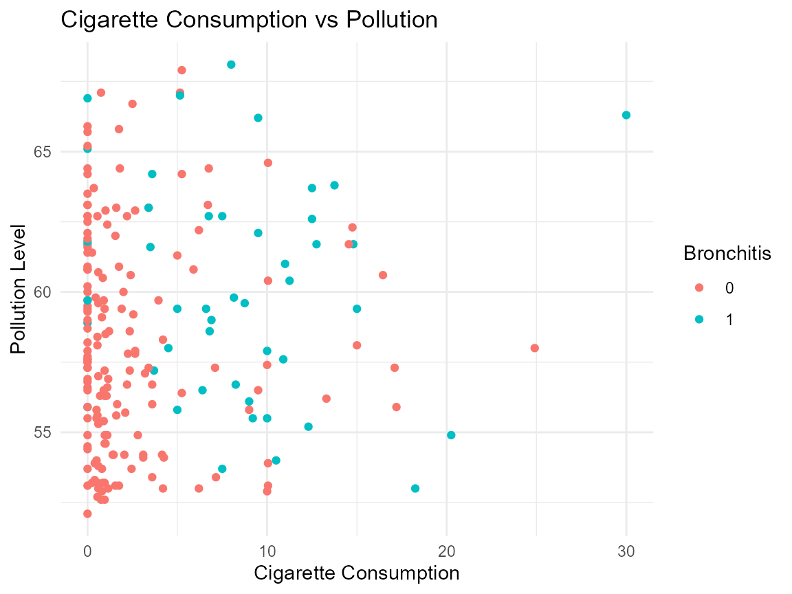
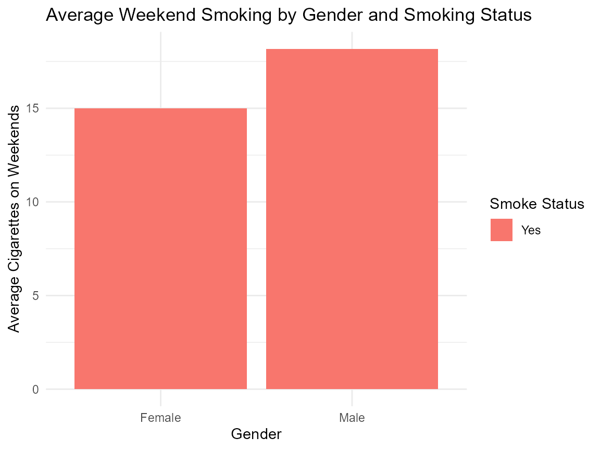
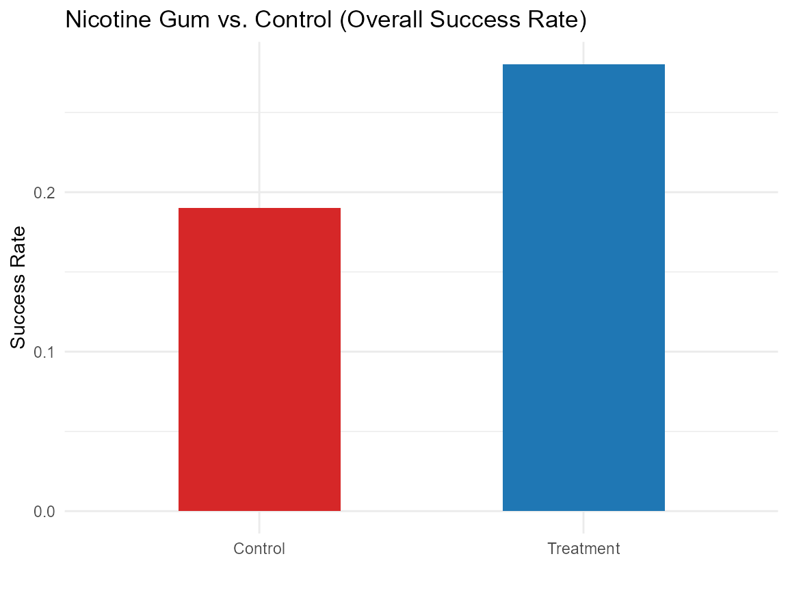

Introduction to PulmoDataSets
Source:vignettes/introduction_to_pulmodatasets.Rmd
introduction_to_pulmodatasets.Rmd
library(PulmoDataSets)
library(dplyr)
#>
#> Attaching package: 'dplyr'
#> The following objects are masked from 'package:stats':
#>
#> filter, lag
#> The following objects are masked from 'package:base':
#>
#> intersect, setdiff, setequal, union
library(ggplot2)Introduction
The PulmoDataSets package offers a thematically rich and diverse collection of datasets focused on the lungs, respiratory system, and associated diseases. It includes data related to chronic respiratory conditions such as asthma, chronic bronchitis, and COPD, as well as infectious diseases like tuberculosis, pneumonia, influenza, and whooping cough. In addition, it provides datasets on risk factors and interventions, including smoking habits and nicotine replacement therapies, which are critical in understanding the epidemiology and prevention of respiratory illnesses.
Dataset Suffixes
Each dataset in the PulmoDataSets package uses a
suffix to denote the type of R object:
_df: data frame_dt: data table_tbl_df: tibble_ts: time series
Below are selected example datasets included in the
PulmoDataSets package:
bronchitis_Cardiff_df: Chronic Bronchitis in Cardiff Men.smoking_UK_tbl_df: UK Smoking Habits.nicotine_gum_df: Nicotine Gum and Smoking Cessation.
Data Visualization with PulmoDataSets Data
Chronic Bronchitis in Cardiff Men
# Summary with .groups = "drop" to avoid the message (stored but not printed)
summary_stats <- bronchitis_Cardiff_df %>%
group_by(r, rfac) %>%
summarise(
mean_cig = mean(cig, na.rm = TRUE),
mean_poll = mean(poll, na.rm = TRUE),
count = n(),
.groups = "drop"
)
# Plot only
ggplot(bronchitis_Cardiff_df, aes(x = cig, y = poll, color = factor(r))) +
geom_point() +
labs(
title = "Cigarette Consumption vs Pollution",
x = "Cigarette Consumption",
y = "Pollution Level",
color = "Bronchitis"
) +
theme_minimal()
UK Smoking Habits
smoking_summary <- smoking_UK_tbl_df %>%
group_by(gender, smoke) %>%
summarise(avg_amt_weekends = mean(amt_weekends, na.rm = TRUE), .groups = "drop") %>%
filter(!is.na(avg_amt_weekends))
ggplot(smoking_summary, aes(x = gender, y = avg_amt_weekends, fill = smoke)) +
geom_col(position = "dodge") +
labs(
title = "Average Weekend Smoking by Gender and Smoking Status",
x = "Gender",
y = "Average Cigarettes on Weekends",
fill = "Smoke Status"
) +
theme_minimal()
Nicotine Gum and Smoking Cessation
# Step 1: Calculate mean success rates (no extra packages)
nicotine_summary <- nicotine_gum_df %>%
summarize(
treatment = sum(qt) / sum(tt), # Overall success rate (treatment)
control = sum(qc) / sum(tc) # Overall success rate (control)
)
# Step 2: Plot (manually reshape data without tidyr)
ggplot(data.frame(
group = c("Treatment", "Control"),
success_rate = c(nicotine_summary$treatment, nicotine_summary$control)
), aes(group, success_rate, fill = group)) +
geom_col(width = 0.5) +
labs(
title = "Nicotine Gum vs. Control (Overall Success Rate)",
y = "Success Rate",
x = ""
) +
scale_fill_manual(values = c("Treatment" = "#1f77b4", "Control" = "#d62728")) +
theme_minimal() +
theme(legend.position = "none")
Conclusion
PulmoDataSets package delivers ready-to-use respiratory
datasets (COPD, asthma, TB, pneumonia, etc.) for
clinical and epidemiological research. The package simplifies data
access for modeling, teaching, and public health studies.
For detailed information and full documentation of each dataset, please refer to the reference manual and help files included within the package.